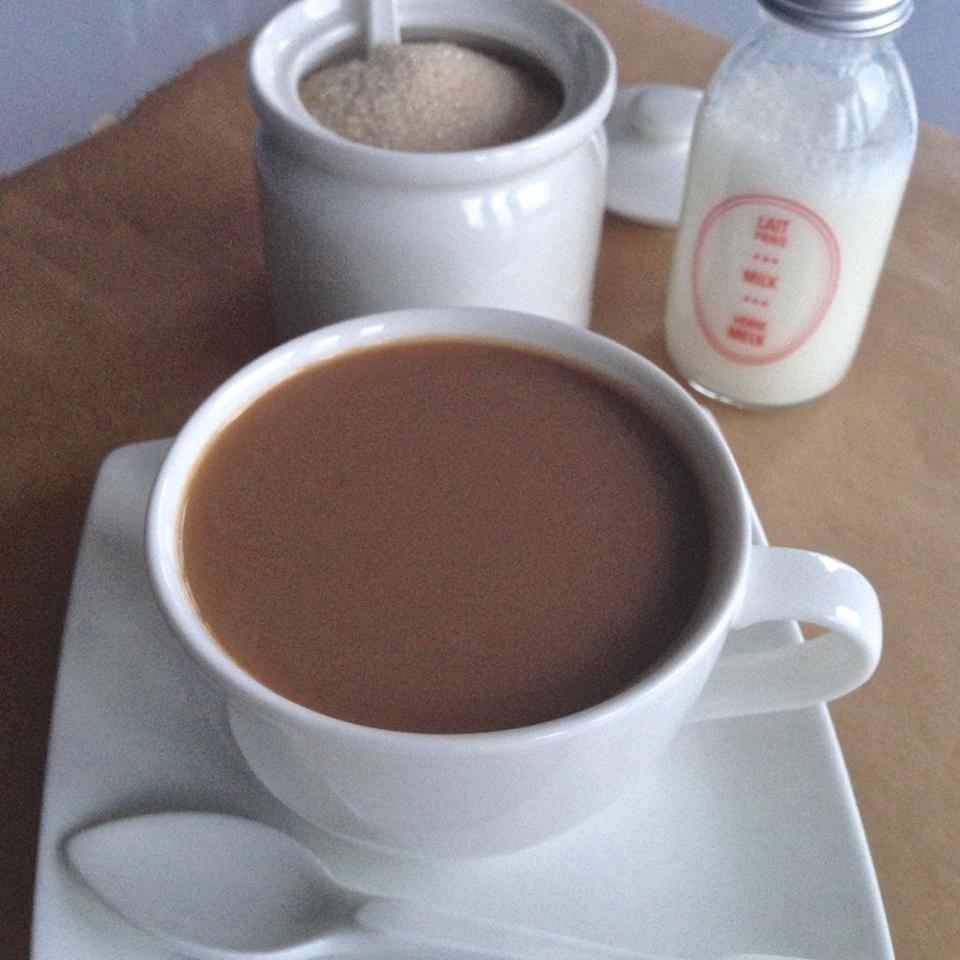

CHAI

Indian tea, or chai as its called in India is a great beverage
It's quite easy to make chai for yourself, keep reading for the recipe!
Ingredients
- Tea powder/crushed leaves
- Sugar
- Milk
- Some spices
- Water
Now for the steps:
- Bring water to a boil in a saucepan; add fennel, cloves, and cardamom. Continue boiling water for 3 minutes.
- Stir milk into the water and return mixture to a low boil; add tea bags, reduce heat to low, and boil until the tea has a strong, but not bitter flavor, 2 to 3 minutes.
- Strain tea into 4 tea mugs; sweeten with sugar to individual tastes.